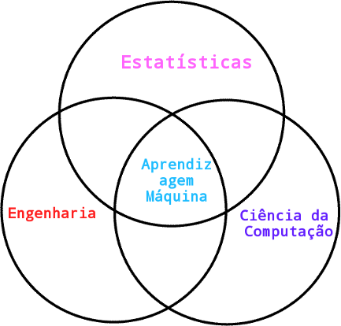

Muita gente esta falando sobre aprendizagem maquina, mas o que é realmente? O que posso fazer com isso? Quem está usar? Bem este artigo foi escrito especificamente para responder algumas destas questões.
O que é aprendizagem maquina?
Aprendizagem Maquina é uma área de Inteligência Artificial cujo objetivo é o desenvolvimento de algoritmos computacionais que ajudam a maquina a aprender. O algoritmo recebe dados e daí tenta deduzir informação sobre as propriedades dos dados e esta informação possibilita o algoritmo a prever e tomar decisões baseadas nessas previsões. Isso é possível porque dados não aleatorias contêm padrões e isso ajuda o algoritmo a generalizar.Para generalizar, o algoritmo treina um modelo com dados que ela achou importante e retorna alguma saída. Construir um bom programa de inteligência artificial está diretamente relacionado a encontrar a melhor função que mapeie os diversos dados de entrada com os de saída. Muitas das vezes este algoritmo ou programa é chamado de "agente inteligente". .
Na grande maioria dos casos, o agente trabalha com espaços em que não há uma maneira eficiente de se programar manualmente uma função que lide com todos os casos possíveis, seja porque o ambiente em que atua não é discreto, por possuir uma certa aleatoriedade ou por não ser possível observá-lo completamente, então daí surge a necessidade de obter resultados de outras maneiras.
Aprendizagem máquina encontra-se na interseção da ciência da computação, engenharia e estatísticas e tambem aparece um outras disciplinas. Estatísticas e Algebra Linear são usadas extensivamente e possibilitam a resolução de vários problemas na área.
Aprendizado Supervisionado
Algoritmos na área de aprendizagem máquina estão agrupados em 3 grupos, aprendizado supervisionado é uma familia de algoritmos que precisam de ajuda de um expert ou humano para ajudá-lo a saber como criar um modelo correcto e obter resultados esperados. Um exemplo disso é um sistema de classificação de emails. Apartir de algumas referências ou exemplos de emails que o usuario identificou como sendo spam, o classificador pode deduzir se um email com certas caracteristicas é spam ou não.
Aprendizado Não Supervisionado
O segundo grupo é uma familia de algoritmos que funcionam muito bem quando não há conhecimento suficiente para criar um modelo. O Algoritmo procura padrões escondidos nos dados, organiza-os e daí poderar tomar conclusões. clusterização é usado extensivamente em processamento de imagens e vídeos.
Aprendizado por reforço
O terceiro grupo é uma familia de algoritmos que realiza um feedback sobre os resultados obtidos, atribuindo pontuações positivas a resultados considerados corretos e penalizando os incorretos.
Diante dessa pontuação, o agente consegue ajustar seu comportamento de modo a buscar o melhor resultado.
Essa familia de algoritmos são utilizadas em robotíca e IA em jogos. Veja um exemplo de aprendizado por reforço no vídeo abaixo.
Quem está usar e como?
Há muitas empresas ao redor do mundo que estão a colecionar dados (data mining) com objectivo de analisar-lás com metodos estatísticos e aprendizagem máquina, de maneiras a beneficar-se dessas informações. A Google usa aprendizagem máquina em muitos dos seus produtos, por exemplo Google Image Search usa o conjunto de visão computacional e aprendizagem máquina para encontrar imagens semanticamente semelhantes e não só. O Facebook usa as mesmas técnologias para identificar a cara dos seus amigos! Isso não é mágia, isso é o poder da computação! Aprendizagem máquina esta ser usado também em biotecnologia. os avanços na tecnologia de sequenciamento e rastreio criaram enormes conjuntos de dados de tipos diferentes, tais como sequências de ADN, estruturas de proteínas e expressão de ARN. As técnicas de aprendizado máquina são aplicadas em todos esses tipos de dados, com objectivo de encontrar padrões que possam aumentar a compreensão dos processos biológicos.
Conclusão
Aprendizagem máquina esta ser cada vez mais usado no mundo para resolver vários tipos de problemas, irei postar vários artigos sobre a minha experiência a usar-lá e tambem tutorias que irão ajudar você a entender melhor essa área fascinante! Será que conhecer-lá é proveitoso para desenvolvidores aqui em Angola? Estas a usar aprendizagem máquina em um produto ou projecto? Deixe seu comentário abaixo.